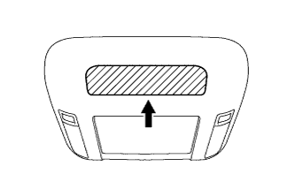

РАЗВЛЕКАТЕЛЬНО-ИНФОРМАЦИОННАЯ СИСТЕМА ДЛЯ ЗАДНИХ ПАССАЖИРОВ > Звук из беспроводных наушников неразличим, отсутствует или плохое качество звука |
| 1.ПРОВЕРЬТЕ БАТАРЕЮ БЕСПРОВОДНЫХ НАУШНИКОВ |
Убедитесь, что сухая батарея беспроводных наушников не разряжена.
|
| ||||
| OK | |
| 2.ПРОВЕРЬТЕ НАСТРОЙКИ БЕСПРОВОДНЫХ НАУШНИКОВ |
Проверьте настройки беспроводных наушников.
Убедитесь, что громкость не установлена на "0".
Убедитесь, что режим "MUTE" (отключение звука) выключен.
|
| ||||
| OK | |
| 3.ОЧИСТИТЕ ПРИЕМНИК ИНФРАКРАСНОГО ИЗЛУЧЕНИЯ |
|  |
Очистите приемник инфракрасного излучения на телевизионном дисплее.
Проверьте, проявляется ли неисправность снова.
|
| ||||
| OK | ||
| ||
| 4.ЗАМЕНИТЕ БЕСПРОВОДНЫЕ НАУШНИКИ |
Замените беспроводные наушники новыми или заведомо исправными и убедитесь, что рассматриваемая неисправность устранена.
|
| ||||
| OK | ||
| ||